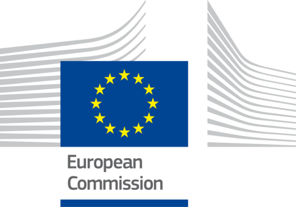
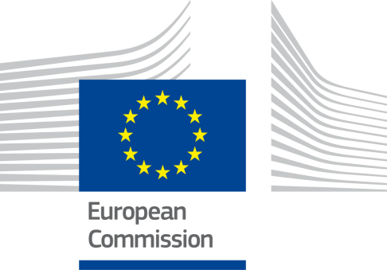
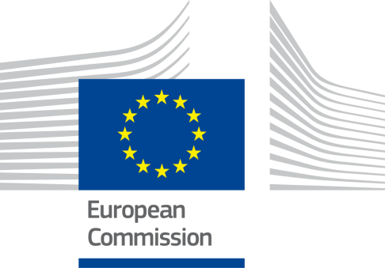

Digital Public Administration factsheet 2023
France

1 Interoperability State-of-Play 4
2 Digital Public Administration Political Communications 8
3 Digital Public Administration Legislation 12
4 Digital Public Administration Infrastructure 20
5 Digital Public Administration Governance 31
6 Cross-border Digital Public Administration Services for Citizens and Businesses 34

1
Interoperability State-of-Play
In 2017, the European Commission published the European Interoperability Framework (EIF) to give specific guidance on how to set up interoperable digital public services through a set of 47 recommendations divided in three pillars. The EIF Monitoring Mechanism (MM) was built on these pillars to evaluate the level of implementation of the framework within the Member States. Whereas during the previous, the MM relied upon three scoreboards, the 2022 edition includes an additional scoreboard on cross-border interoperability, assessing the level of implementation of 35 Recommendations. The mechanism is based on a set of 91 Key Performance Indicators (KPIs) clustered within the four scoreboards (Principles, Layers, Conceptual model and Cross-border interoperability), outlined below.
Source: European Interoperability Framework Monitoring Mechanism 2022
Each scoreboard breaks down the results into thematic areas (i.e. principles). The thematic areas are evaluated on a scale from one to four, where one means a lower level of implementation and four means a higher level of implementation. The graphs below show the result of the EIF MM data collection exercise for France in 2022, comparing it with the EU average as well as the performance of the country in 2021.
Source: European Interoperability Framework Monitoring Mechanism 2022
France’s results in Scoreboard 1 show an overall good implementation of the EIF Principles, scoring above the European average for Principle 12 (Assessment of Effectiveness and Efficiency). Areas of improvements are concentrated in the Principles 3 (Transparency) and 7 (Inclusion and Accessibility) for which the scores of 3 and 2 respectively show a medium to upper-medium performance in the implementation of corresponding recommendations. Indeed, the internal visibility and provision of external interfaces for European public services (Principle 3 – Recommendation 5) and the accessibility of public services to all citizens, including persons with disabilities, the elderly and other disadvantaged groups (Principle 7 – Recommendation 14) could be improved to reach the maximum score of 4 in corresponding principles.
Source: European Interoperability Framework Monitoring Mechanism 2022
The French results for the implementation of interoperability layers assessed for Scoreboard 2 shows an overall good performance with scores of 3 and 4. The areas that could be improved to support the country's implementation of the Scoreboard 2 recommendations are concentrated in the area of interoperability governance. More specifically, France's score of 1 in Recommendation 23, which states that relevant catalogues of standards, specifications and guidelines at national and European level should be consulted when procuring and developing ICT solutions, but also Recommendation 22, which states that using a structured, transparent, objective and common approach to evaluate and select standards and specifications while taking into account relevant EU recommendations and seeking to make the approach consistent across borders, lowers France's overall score in the area of interoperability governance.
Source: European Interoperability Framework Monitoring Mechanism 2022
France’s scores assessing the Conceptual Model in Scoreboard 3 show a very good performance with a maximum score of 4 in the implementation of recommendations associated with base registries, catalogues, security and privacy, internal information sources and services, the conceptual model itself and open data. Although aligned with the EU average or scoring above it, there is still area for improvement regarding the implementation of the recommendations related to external information sources and services. More precisely, the use of external information sources when developing public services (External information sources and services - Recommendation 45) could be developed further, which would consequently improve the overall French score in Scoreboard 3.
Source: European Interoperability Framework Monitoring Mechanism 2022
The results of France concerning Cross-border Interoperability in Scoreboard 4 show an at upper-middle performance of the country in 16 indicators. Particularly, France has a high performance with the maximum score of four in Principle 2, 8 and 11 (i.e. Openness, Security and privacy and Preservation of information) as well as in legal and technical interoperability (i.e. Recommendation 27 and 33). However, France still has margin for improvement, performing low on some indicators. For instance, efforts could focus on the consultation of relevant catalogues of standards, specifications and guidelines at national and EU level, in accordance with your NIF and relevant DIFs, when procuring and developing ICT solutions (i.e. Recommendation 23) and on ensuring that all European public services are accessible to all citizens, including persons with disabilities, the elderly and other disadvantaged groups (i.e. Recommendation 14).
Additional information on France’s results on the EIF Monitoring Mechanism is available online through interactive dashboards.
Curious about the state-of-play on digital public administrations in this country? Please find here some relevant indicators and resources on this topic: |

2
Digital Public Administration Political Communications
 French Presidency of the Council of the EU
French Presidency of the Council of the EU
In the context of the French Presidency of the Council of the EU (January-June 2022), the Interministerial Digital Directorate (DINUM) co-hosted many events intended to foster exchanges and discussions on the enhancement of digital administration at the European level:
 First Report on the Implementation of the Berlin Declaration
First Report on the Implementation of the Berlin Declaration
In the context of the French Presidency of the Council of the EU (January-June 2022), the Interministerial Digital Directorate (DINUM) published the first report of the implementation of the Berlin Declaration on Digital Society and Value-based Digital Government.
 General Framework on the Eco-design of Digital Public Services
General Framework on the Eco-design of Digital Public Services
In December 2022, the Interministerial Digital Directorate (DINUM) published a General Framework for the Eco-design of Digital Public Services.
 Accessibilite.numerique.gouv.fr
Accessibilite.numerique.gouv.fr
In November 2022, the Interministerial Digital Directorate (DINUM) launched a website designed to help administrations implement the General Accessibility Framework for Digital Public Services (RGAA). The framework is being updated in 2023.
 Ara.numerique.gouv.fr
Ara.numerique.gouv.fr
In December 2022, the Interministerial Digital Directorate (DINUM) developed an online tool, called "ara", to assist public sector digital services websites in entering accessibility compliance audits according to French regulations and in publishing audit reports.
 “3DS” Law
“3DS” Law
In February 2022, France adopted the so-called 3DS Law in order to simplify public action. Indeed, provisions contained in the text are meant to facilitate the exchange of data between administrations while simplifying procedures for citizens. The idea is to move from the Once-Only Principle to a ‘Never tell us’ principle, using data that administration already holds on citizens to allow them to exercise their rights, etc.
No political communication has been published in this field to date.
No political communication has been published in this field to date.
No political communication has been published in this field to date.
No political communication has been published in this field to date.
No political communication has been adopted in this field to date.
European Single Procurement Document
The European Single Procurement Document (ESPD or Document Unique de Marché Européen, DUME in French) was launched in France in 2018. The ESPD is a harmonised declaration of honour elaborated on the basis of a standard form drawn up by the European Commission, used in public procurement procedures by both public purchasers (contracting authorities/entities) and economic operators in the European Union.
The ESPD service solution allows for the creation and filing of fully dematerialised ESPDs. In particular, the solution enables each public purchaser to precisely define the criteria for its tender, and each economic operator to meet the relevant criteria. In addition, the necessary certificates are automatically repatriated. Thanks to the ESPD service, the ESPD becomes a simplification tool for businesses and public buyers.
Public Procurement Digital Transformation Plan
In December 2017, the Public Procurement Digital Transformation Plan was adopted as a shared roadmap for the digitisation of public procurement for the period 2017–2022.
 Domain-specific Political Communications
Domain-specific Political Communications‘Mon Espace Santé’
Since January 2022, every citizen has a personal digital health space called ‘Mon Espace Santé’. ‘Mon Espace Santé’ provides a direct access to a personal and secure health data storage space, a secure messaging system with health professionals, a medical calendar to manage medical appointments and a health app store providing selected health apps. This new digital health service will drastically simplify the daily life of French citizens and their relationship with health data. They are now able to access, manage and share their health data in a secured space and in compliance with GDPR. Please note that ‘Mon Espace Santé’ is being automatically proposed to citizens who can refuse to use it. This makes the suggested ‘100% target’ hardly reachable, as some people will inevitably refuse to open and use the proposed service. This means they simply won’t be able to have a direct access to most of their medical records.
Since November 2022, the digital service also offers a catalogue of services allowing users to find quality health services and certified applications. These include websites or apps that allow users to make medical appointments, measure their blood pressure or weight, or access recommended tips and news.
In 2023, data stored on the referenced digital services are planned to be shared in a secure and simple way through ‘Mon Espace Santé’. The user's consent will always be required, and users will be able to choose which applications they wish to synchronise their information with.
National Strategy for Artificial Intelligence
Following the publication of the Villani Report on Artificial Intelligence (AI), the government launched a National Strategy for Artificial Intelligence at the AI for Humanity Summit in 2018.
National Research Strategy for Artificial Intelligence
On 28 November 2018, the main points of the National Research Strategy for AI were presented. The strategy is largely based on research, that is the foundation of AI development. In this field, France already holds a recognised place thanks to its excellent mathematics and computer science schools. In this context, the objective of the Strategy is twofold:
The national AI strategy is part of the France 2030 plan. The first phase aims to strengthen research capacities (2018-2022) by promoting the creation and development of a network of interdisciplinary AI institutes and the funding of doctoral programs. The second phase aims to train and attract the best AI talent (2021-2025) with the allocation of a total budget of 2.22 billion euros (including public and private funding).
No political communication has been adopted in this field to date.
No political communication has been adopted in this field to date.
Cloud Strategy
In July 2021, France adopted a doctrine for the use of cloud computing technology by the French State, called “Cloud au centre”. With this doctrine, cloud computing has become the default hosting and production mode for the State's digital services, for all new digital products and for products undergoing a substantial evolution. The State’s digital services must now be hosted on one of the two internal interministerial public clouds or on cloud solutions provided by private companies that satisfy strict security criteria. Indeed, the objective of this doctrine is to ensure the State’s sovereignty, the continuity of public services and data protection for citizens. A specific team was set up within DINUM to accompany administrations in making cloud computing a major tool for a quality digital transformation and to animate a community of public actors on this topic. This team works closely with the French Cybersecurity Agency (ANSSI) in order to ensure a secure environment for the use of cloud computing technology by the French State.
No political communication has been adopted in this field to date.
No political communication has been adopted in this field to date.
No political communication has been adopted in this field to date.
No political communication has been adopted in this field to date.

3
Digital Public Administration Legislation
Law for a State at the Service of a Society Based on Trust
The Law for a State at the Service of a Society Based on Trust was promulgated on 10 August 2018. It established the principle of the ‘right to error’ (in French droit à l’erreur) and it included a series of measures to simplify administrative formalities.
The first part of the law provides that French citizens will not incur in any penalty for the first error they make while submitting official declarations to the administration, as long as it was made in good faith. It will be up to the administration to demonstrate the user's bad faith.
The second part of the law gathers measures to simplify administrative formalities. To facilitate the citizens' journey, an experiment will be carried out appointing a single contact person who will be responsible for having the users' requests processed by the administrations concerned.
Digital Bill
The Law for a Digital Republic, or ‘Digital Bill’, was promulgated on 7 October 2016, preparing the country for the challenges of the digital transition and the economy of tomorrow. In particular, the law promotes innovation, the development of the digital economy, and an open and reliable digital society, while protecting the rights of citizens. It also aims to ensure access for all, in all territories, to all opportunities related to the digital technology.
For the first time, this document was jointly prepared with internet users before being submitted for review, incorporating the contributions into the text.
In addition, the decrees related to the bill establish the following principles:
Ordinance on the Right of Users to Communicate with the Administration via Electronic Means
Ordinance No. 2014 - 1330 on the Right of Users to Communicate with the Administration via Electronic Means was adopted on 6 November 2014 by the French government. The Ordinance effectively defines the conditions and procedures for users to exercise the right to communicate electronically with the different administrations, in line with Ordinance No. 2013 - 1005 adopted on 12 November 2013, allowing for the simplification of the relations between the administration and users.
The former Secretary of State for Public Accounts and State Reform, Thierry Mandon, announced, at the Council of Ministers, 40 measures to be adopted by the government to simplify the lives of citizens. These measures are the result of the public consultations held between 9 July and 15 September 2014, with more than 2 000 proposals made by users. Many of the measures represent a great step forward for users, enabling services such as scheduling an appointment at the Institute for Family Allowances (Caisse d'allocations familiales - CAF) or applying for the social security card online, getting a personal medical certificate, paying fines via smartphone or purchasing stamps online.
All matters relevant to the relationship between users and the administration (central administration, regional governments and private legal entities having a public service mandate) are now regulated in one single code, namely the Code on the Relationship between Users and the Administration (Code des relations entre le public et l’administration), which came into force on 1 January 2016. The Code deals with matters such as digital exchanges, referral modalities of the administration, obligation of the administration to provide eServices to citizens (eProcedures, eForms, etc.), obligation of the administration to acknowledge receipt of digital referrals, etc. In addition, the code contains the rules applicable to the exchange of information between administrations (‘Once-Only’ principle). Book III of the code deals with access to administrative documents and re-use of public information. Finally, the code includes all new measures implemented by the Digital Republic and published on 27 October 2016.
Decree on the Exchange of Information and Data between Administrations within the Context of Administrative Procedures
The purpose of the Decree on the Exchange of Information and Data between Administrations within the Context of Administrative Procedures is to organise the exchange of information or data between administrations when this is necessary to process declarations or requests submitted by the public. In particular, the decree determines the fields and procedures concerned by the exchange of information or data, the list of administrations by which the request for communication is made according to the type of information or data, the security and confidentiality criteria necessary to guarantee the quality and reliability of the exchange, as well as the retention period for information and data applicable to each exchange system. The text of the decree is codified in the Code on the Relationship between Users and the Administration.
Ordinance on Electronic Interactions between Public Services Users and Public Authorities and among Public Authorities
The Ordinance on Electronic Interactions between Public Services Users and Public Authorities and among Public Authorities (Ordinance relative aux teleservices) was adopted on 8 December 2005 on the basis of the Legal Simplification Law of 9 December 2004. The ordinance establishes a comprehensive legal framework for the shift to ‘electronic administration’, creating simple and secure electronic interactions between citizens and public authorities. The text covers all exchanges of electronic documents and emails or digital communications among public authorities, and between citizens and the central administration, regional governments and private organisations. Moreover, the ordinance grants emails the same legal status as traditional paper-based correspondence and legalises the use of electronic signatures by public authorities. Lastly, the text stipulates the provisions on both the security of exchanges and the interoperability of information systems.
Since the adoption in 2005, several articles have been abrogated and/or modified by the law and other ordinances in order to adapt to the permanent evolution of the society in terms of electronic and digital exchange.
General Interoperability Framework
In 2005, an Ordinance set-up the General Interoperability Framework. The framework includes recommendations, norms and standards that promote interoperability within administrations’ information systems. The framework promotes the interoperability of the information systems of those actors that wish to interact to go beyond simple bilateral arrangements. An updated version of the framework was published in 2016.
Law on the Modalities of Reuse of Public Sector Information
The purpose of the Law on the Modalities of Reuse of Public Sector Information is to promote the reuse of public data. The text lays down the principle of free access for the opening and reuse of public data, known as ‘open data’. This principle applies to State and local authorities. The law limits the exceptions to the principle of free access, on the one hand, to public authorities required to release their resources, and, on the other, to the digitisation of cultural funds.
Law on Access to Administrative Documents
The Law on Access to Administrative Documents of 17 July 1978 grants everyone access to the administrative documents held by public bodies. All documents which are handed over are subject to copyright rules and cannot be reproduced for commercial purposes. Public bodies must respond to requests for documents within one month. The Commission of Access to Administrative Documents (CADA) has a supervisory role. Before a complaint can be appealed to an administrative court, CADA must make a decision on the complaint.
The ordinance of 23 October 2015 amended and abrogated a number of sections of the law of July 17, 1978.
Article 47 of the Disability Act of 2005
In September 2018, Article 47 of the Disability Act of 2005 was updated by Article 80 of the Act for a Professional Future to transpose the European Directive on digital accessibility of websites and mobile applications of public sector bodies into French law.
Law for a State at the Service of a Society Based on Trust
In January 2019, two decrees finalised the implementation of the ‘Tell Us Once’ principle established by the Law for a State at the Service of a Society based on Trust. The purpose of this Law was to simplify the French administrative formalities based on two pillars: trust and simplicity; and aiming at all users – individuals or companies – in their daily dealings with administrations.
Published on 20 January 2018 in the Official Journal, the Decree on the Exchange of Information and Data between Administrations supplemented precisely the ‘Tell us once’ principle, one of the pillars of the Law, introducing a major change in relations between users and administrations: a user – individual or company – undertaking an administrative procedure is no longer required to provide certain information or supporting documents (e.g. reference tax income, proof of identity, certificate of rights issued by social security organisations) if the information is already held by the administration.
Law on Electronic Communications and Audio-visual Communication Services
Adopted on 9 July 2004 and amended on 8 August 2008, the Law on Electronic Communications and Audio-visual Communication Services transposes into French law the EU regulatory framework for electronic communications, namely: Directive 2002/21/EC (Framework Directive); 2002/20/EC (Authorisation Directive); 2002/19/EC (Access Directive); 2002/22/EC (Universal Service Directive); and 2002/58/EC (Privacy Directive). The transposition has been subsequently completed with the adoption of several decrees.
Law on Electronic Signature
The Law on Electronic Signature of 13 March 2000 was the first to grant legal value to electronic signatures and electronically-signed documents, transposing EU Directive 1999/93/EC on a Community framework for electronic signatures into French law. The Law was then complemented by an application decree issued on 30 March 2001, then abrogated by a new decree on 28 September 2017, following the adoption on 23 July 2014 of Regulation (EU) No. 910/2014 on electronic identification and trust services for electronic transactions in the internal market (repealing EU Directive 1999/93/EC).
Law for Trust in the Digital Economy
Adopted on 21 June 2004, the Law for Trust in the Digital Economy transposes EU Directive 2000/31/EC on electronic commerce and sets the legal framework for the development of eCommerce services in France. The law undergoes minor modifications every year in order to foresee any eventuality due to the evolution in the digital industry.
Law No. 2018-133 of 26 February 2018 on Various Provisions for Adapting to European Union Law in the Field of Security
The Law on Various Provisions for Adapting to European Union Law in the Field of Security was implemented in France on 26 February 2018. The Law contains a series of provisions to transpose Directive 2016/1148 of the European Parliament and of the Council of 6 July 2016 concerning measures for a common high-level of security of network and information systems across the Union.
Personal Data Protection Act
The Personal Data Protection Act was promulgated on 20 June 2018, adapting the Law on Informatics and Liberties of 6 January 1978 to the European data protection package. The package included the General Data Protection Regulation (GDPR), a regulation of 27 April 2016 directly applicable in all European countries as of 25 May 2018 and a directive dated the same day on criminal records, the so-called Police Directive.
General Framework for Information Security of Administrations
A General Framework for Information Security of Administrations (Référentiel général de sécurité, RGS) was set-up by a decree in 2010. The RGS establishes a set of security rules that administrations must follow when securing their information systems. It also proposes a set of good practices in the field of information systems security that administrations are free to apply. The compliance of administrations to the RGS is monitored by DINUM in collaboration with the French Cybersecurity Agency (ANSSI). An updated version of the RGS was published through an order in 2014.
Law on Informatics and Liberties
The Law on Informatics and Liberties was adopted on 6 January 1978, providing a legal framework for the use of identifiers in databases and the processing of personal data by public and private sector organisations. In addition, the Law created a National Commission for Informatics and Liberties (CNIL). The CNIL is in charge of overseeing the implementation and observance of the Law and had an advisory role in the planning of administrative data systems. The Law on Informatics and Liberties was amended by Law No. 2004-801 of 6 August 2004 implementing the EU Data Protection Directive (95/46/EC).
Since then, the law has undergone minor amendments each year, including Law 2022-52, which created Article 22-1 to simplify the procedure for corrective measures and sanctions.
Vehicle Portal
According to the Law on Taxis and Chauffeured Cars, starting from February 2016 all registrations in the Vehicle Registry must be done through a dedicated platform currently under construction.
Transport.data.gouv.fr
The delegated Commission Regulation (EU) 2017/1926 of 31 May 2017 supplementing Directive 2010/40/EU of the European Parliament and of the Council with regard to the provision of EU-wide multimodal travel information services stipulates that each Member State of the European Union shall set up a single national access point giving users access to static and dynamic travel and traffic data. Transport authorities, infrastructure managers, transport operators and providers of on-demand transport services are required to make available, through the access point, the data relating to their services and networks that are necessary for traveller information. Providers of travel information services may then re-use this data. As concerns France, the transport.data.gouv.fr website is the national access point referred to in Article 3 of the delegated Commission Regulation (EU) 2017/1926 of 31 May 2017 supplementing Directive 2010/40/EU of the European Parliament and of the Council with regard to the provision of EU-wide multimodal travel information services.
Commercial Code
The Commercial Code is the main company law in France, stipulating the most important requirements and rules for company organisation and structure. The French Commercial Code also refers to some rules in the Civil Code, and the Monetary and Financial Code. The interoperability between the different Code is high. As far as company registration is concerned, the Act of 19 December 2002 establishes the obligations of all companies set up in France with regard to the French Registry of Commerce and Companies (Registre de commerce et des sociétés).
French Public Procurement Code
On 1 April 2019, the reformed French Public Procurement Code entered into force, following the publication of Ordinance No. 2018-1074 dated 26 November 2018 about the legislative part of the Code and Decree No. 2018-1075 dated 3 December 2018 about the regulatory part of the Code.
The Code aims to modernise French regulations and finalise the transposition of the three European directives on public procurement and concessions dated 26 February 2014 (Directive 2014/24/EU, 2014/25/EU and 2014/23/EU), including, for instance, the eProcurement provisions relating to eAuctions and Dynamic Purchasing Systems.
Moreover, the Code aims at gathering the rules governing the award, performance, and termination of public procurement agreements − mainly public procurement contracts and concession agreements.
The Code is divided into three parts: (i) scope (defining the two main types of public procurement agreements); (ii) rules applicable to public procurement contracts (providing for the rules applicable to public procurement contracts, partnership contracts, public defence or security contracts, and some specific public procurement contracts); and (iii) rules applicable to concession agreements.
The codification process was also used to integrate some of the main principles of the public contracts case law into the written positive law and was carried out by integrating laws and regulations already in force.
 Some new public works regulations from January 2023 streamline the procedure for companies but also relate to data known as ‘essential’. Changes on public procurement law are regularly updated.
Some new public works regulations from January 2023 streamline the procedure for companies but also relate to data known as ‘essential’. Changes on public procurement law are regularly updated.
eInvoicing Legislation
Ordinance No. 2014-697 of 26 June 2014 on the Development of Electronic Invoicing is the result of a codification process aimed, among other things, to integrate eInvoicing legislation. The Ordinance stipulates that the economic operators involved in public procurement must submit electronic invoices and all public administrations must accept these invoices. The submission of  electronic invoices is mandatory for all economic operators starting from 1 January 2020.
electronic invoices is mandatory for all economic operators starting from 1 January 2020.
According to the 2020 Budget Law, business-to-business eInvoicing will start, on a gradual basis, from January 2023 and will be mandatory as of 1 January 2025, depending on the size of the company and the sector of activity.
Law on 2018–2022 Programming and on the Reform of Justice
The 2018–2022 Law on Programming and on the Reform of Justice was promulgated on 23 March 2019, providing for a 24% increase in the budget of the Ministry of Justice for the period 2018–2022. In this context, 6,500 jobs will be created and EUR 530 million will be spent on the Ministry's digital transformation. The text is structured around seven areas: simplification of civil procedure; reduction of the burden of administrative courts and increased efficiency of administrative justice; simplification and increased efficiency of criminal procedure; possibility of using digital criminal procedure; efficiency and meaning of penalties; diversification of the way juvenile offenders are dealt with and increased efficiency of the judicial system; and adaptation of the functioning of the courts.
Law on the Organisation and Transformation of the Healthcare System
The Law on the Organisation and Transformation of the Healthcare System entered into force on 24 July 2019, implementing the measures presented by the President of the Republic in his speech of 18 September 2018 on the My Health 2022 Plan.
The legislative initiative states that innovation and digital technology play a key role in the French healthcare system, advocating for the digital transformation of the healthcare system and caregiver practices.
More in detail, Article 12 allows users to open their digital health space by 1 January 2022 to access their shared medical file, as well as digital tools for secure exchanges with health professionals and institutions. This aimed to promote prevention by providing access to referenced and personalised health information, simplifying the preparation of hospitalisation and discharge, or even making it possible to evaluate individualised care journeys. The Article also provides that users may decide at any time to close their digital health space and specifies the conditions for destroying the data contained therein.
Law on the Growth and Transformation of Enterprises
On 22 May 2019, the Parliament adopted the Law on the Growth and Transformation of Enterprises launched by the Minister of the Economy, Finance and Recovery. This Law complements the regulatory and non-regulatory measures as well as tax measures that are incorporated into the 2019 Budget Law. All these measures make up the Action Plan for the Growth and Transformation of Enterprises (PACTE). The PACTE has two objectives: making companies grow so that they create more jobs and redefining the place of companies in society to better involve employees. From creation to transfer, the PACTE removes obstacles, simplifying business creation and easing workforce thresholds. In particular, entrepreneurs’ lives will be simplified thanks to the creation of a single online platform for business formalities. The PACTE is a new step in the country's economic transformation and the fourth phase of the economic reforms initiated by the government more than two years ago. The Action Plan is in line with ordinances for strengthening social dialogue and the tax reform initiated by the 2018 Budget Law. Moreover, the PACTE acts in parallel with the Law on the Freedom to Choose One's Professional Future to give small and medium-sized enterprises (SMEs) the means to create jobs.
Law on the Reduction of the Environmental Footprint of the Digital Sector
In November 2021, France adopted a specific law on the reduction of the environmental footprint of the digital sector. The law aims to bring together the digital and ecological transitions. It aims to make all digital actors accountable: citizens, businesses and administrations. It has five objectives: (i) raising awareness on the environmental impact of digital technology; (ii) reducing the renewal of digital devices; (iii) promoting environmentally friendly digital uses; (iv) promoting less energy-consuming data centres and networks, and (v) promote an environmentally friendly digital strategy at the local level.
No legislation has been adopted in this field to date.
No legislation has been adopted in this field to date.
No legislation has been adopted in this field to date.
Circular ‘Cloud au centre’
In July 2021, the French Prime Minister adopted a circular which sets out a doctrine for the use of cloud computing technology by the French State, called “Cloud au centre” (Cloud at the centre). With this doctrine, cloud computing has become the default hosting and production mode for the State's digital services, for all new digital products and for products undergoing a substantial evolution. The State’s digital services must now be hosted on one of the two internal interministerial public clouds or on cloud solutions provided by private companies, while considering strict security criteria when processing sensitive data. Indeed, the objective of this doctrine is to ensure the State’s sovereignty, the continuity of the public services and data protection for citizens.
No legislation has been adopted in this field to date.
No legislation has been adopted in this field to date.
No legislation has been adopted in this field to date.
No legislation has been adopted in this field to date.

4
Digital Public Administration Infrastructure
‘Tell-Us-Once’ Principle: Continuous Enhancement of the API Catalogue
DINUM created a unique point of entry to have access to all public APIs. This catalogue of APIs is primarily intended for service creators and API consumers and aims to facilitate the discovery and understanding of APIs, and the access to APIs and their producers. At the same time, the catalogue enables suppliers to easily publicise their APIs.
Administrations often consume several APIs (from different producers) to implement a teleservice or a new approach. The use of an interdepartmental tool allows them to ensure consistency in the authorisation procedure and centralise their requests.
To facilitate the lives of data providers, DINUM developed a specific tool to manage the authorisation phase, called ‘DataPass’. Furthermore, DINUM created two API hubs, namely API Enterprise and API Particulier.
DataPass
DINUM worked on setting up a common legal framework to harmonise and streamline relations between data providers and service providers through the construction of DataPass, a tool facilitating the connection between suppliers and consumers. This tool is intended for stakeholders (e.g. public administrations) who wish to use personal data. DataPass delivers authorisations through a simple, standardised and compliant process, to access all protected data produced by the State.
For the stakeholders requesting access to data, DataPass contains the following features:
For the data controller:
API Entreprise
Digital technology enables the pre-filling and digitisation of administrative forms that businesses are required to complete, in particular to enable the exchange of information between the different departments and agencies. Since 2014 two projects have been running in the framework of the inter-ministerial programme.
Public administrations can access this information through APIs (API Entreprise) that provide information from different base registries. The base registries that are made available through the APIs are:
The API Enterprise hub aims to centralise company information owned by French administrations (General Directorate of Public Finance, Companies Register, Associations Register, etc.) to help administrative service providers to develop simplified online procedures, e.g. public procurement applications or requests for public subsidies. DINUM performs the technical interfacing with the different APIs within standards that are up-to-date with industrial constraints. Public service providers just have to deal with a single account and a single contact to access multiple data to develop online public services.
API Particulier
The API Particulier hub aims to centralise personal data owned by French administrations (National Family Allowance Fund, General Directorate of Public Finance, etc.) to help administrative service providers (administrations, cities, departments, etc.) to develop simplified and improved online procedures. DINUM performs the technical interfacing with the different APIs within standards that are up-to-date with industrial constraints. Public service providers just have to deal with a single account and a single contact to access multiple data to develop online public services.
For instance, the API hub helps administrations to simplify and improve administrative online processes such as scholarship applications. In this case, families’ incomes were directly retrieved from tax centres. In September 2018, the French administration received 650,000 successful calls, corresponding to as many supporting documents that did not need to be produced. This saves time for families: in the past, some parents had to take half a day off work to submit their applications, others to ask their children to queue during recess. Today, to replace a supporting document with a call to API Particulier users must still enter specific information to the administration, such as tax number or beneficiary number. The French administration would like users to be able to identify themselves more easily through FranceConnect. Thus, with a single login and password, the API hub would allow everyone to simplify their procedures.
FranceConnect
In 2016, France launched a digital identity federator called ‘France Connect’ in order to simplify access to public and private services for French citizens. It relies on pre-existing accounts widely used by French citizens such as health insurance accounts, tax administration accounts, the digital identity proposed by the French postal service, etc. At this stage, 35 million people use it on a regular basis to connect to over 1 500 online services, both public and private (mostly banking and insurance services for the private sector). In 2021, France notified its first eIDAS scheme with Substantial assurance level. In 2022, the French eIDAS node has open up to interoperable eIDAS nodes of other European countries.
Mesdroitssociaux.fr
Mesdroitssociaux.gouv.fr offers a new digital service centralising information about insured persons and facilitating the procedures to be undertaken with social protection bodies. More in detail, Mesdroitssociaux.fr:
The site is continuously evolving and in 2019 some new features were introduced. For instance, the site now enables to use the multi-service simulator without entering FranceConnect IDs, to view activity bonus rights for the last 12 months and to find out if the user can benefit from the individual bonus introduced on 1 January 2019.
Service-Public.fr
Service-Public.fr, which was launched in October 2000, gives public service users access to practical information focused on daily-life events. More specifically, the portal guides citizens to the services enabling them to know their obligations, to exercise their rights and to carry out their administrative procedures. Service-Public.fr is the official website of the French administration, i.e. the single portal for administrative information and access to online services, published by the Directorate of Legal and Administrative Information (DILA) in partnership with national and local administrations.
A simpler and more user-centric version has been available since July 2022.
Entreprendre.Service-Public.fr
Since February 2022, Entreprendre.Service-Public.fr provides administrative information for business owners and guides them through every step of the business life cycle. It was created for entrepreneurs, SMEs and VSB managers, as well as self-employed workers. It is one of the three cornerstones of the online services simplification project which is aimed at professionals. The website works in coordination with:
When it comes to services, Entreprendre.Service-Public.fr lists every process by themes, by stage of the business life cycle and in accordance with a consistent and appropriate user experience. Document templates (invoice, incorporation deed, etc.) and simulators are available on the website. Thanks to the partnership with ‘Place des Entreprises’, users can be helped by online advisers from around forty different government services or the public sector.
Data.gouv.fr
Data.gouv.fr is an open data portal maintained by the French government. The portal can host or reference datasets produced by administrations, corporations, citizens or non-profit organisations. On data.gouv.fr, anyone can publish or comment a dataset, or publish a reuse.
Observatoire.numerique.gouv.fr
In June 2019, DINUM launched an Observatory to track the quality of digital public services, meant to analyse their human-centricity, user experience and accessibility. This Observatory regroups the 250 most used digital public services. Results are updated quarterly and made available to the general public. Users’ satisfaction is taken into account thanks to the ‘Je donne mon avis’ (‘Give feedback’) button, available on 90% of these digital public services. At this stage, user satisfaction is higher than 7/10 for 66% of procedures and nearly 40% of these services are accessible to disabled users. In addition, this platform offers the possibility for any civil servant to generate a ‘Je donne mon avis’ (‘Give feedback’) button, in order to track customer satisfaction on any digital service. In April 2023, DINUM will launch a reshaped and redesigned observatory, with new criteria tracked, such as language complexity, forms automatically filled, etc.
Demarches-simplifiees.fr
Since 1 March 2018, the demarches-simplifiees.fr website has been allowing users to make online queries in record time and free of charge. As an open-source dematerialisation platform, demarche-simplifiees.fr offers administrations a turnkey service to digitalise administrative procedures and, as a result, free themselves from paper forms. In four years, the platform enabled the digitisation of more than 16 000 administrative procedures and the filing of more than six million files. The platform is used by more than 1000 entities, mainly State services and public bodies, but also the Government of French Polynesia.
A study commissioned by the European Commission in July 2019 compared different forms of generation tools used by European payrolls with demarches-simplifiees.fr, the only open-source solution, which resulted as the best one.
Business Creation Portals
The guichet-entreprises.fr and guichet-qualifications.fr portals form the online point of single contact for business creation recognised by the European Commission, implementing Directive 2006/123/CE of the European Parliament and of the Council of December of 12 December 2006 on services in the internal market and Directive 2005/36/CE of the European Parliament and of the Council of 7 September 2005 on the recognition of professional qualifications. More in detail:
The Guichet Enterprises service, operating both portals, is part of the EUGO Network.
France Num
The France Num portal was launched on 15 October 2015 and is maintained by the General Directorate for Enterprises (DGC) of the Ministry of the Economy, Finance and Recovery. France Num aims to promote the digital transformation of SMEs and Very Small Businesses (VSBs). In particular, the portal allows companies to find funding for their digital projects, receive advice from experts and have an easy access to governmental and local digital services for businesses. France Num also plays a key role in building a communauté des activateurs, i.e. a network of digital experts supporting France’s digital transformation.
Tribunaldigital.fr
The tribunaldigital.fr portal gives online access to France’s 134 commercial courts. Companies can access their files and personal data as well as follow the progress of an ongoing case. The portal also allows users to have an easy access to public services, including seizing the local jurisdiction, collecting/paying a debt, seeking help in case of a cash crisis and filing an application before a bankruptcy judge.
Health Data Hub
The aim of the Health Data Hub, a platform for health data launched in 2019, is to promote the use of and increase the possibilities for exploiting health data, particularly in the fields of research, support to healthcare personnel, health systems management, and monitoring and informing patients. In this context, the Hub will enable the development of new techniques, notably those related to artificial intelligence methodologies, and will have a role in promoting innovation in the use of health data.
National Agency for Secured Documents websites
The National Agency for Secured Documents (ANTS) manages several websites:
No particular infrastructure in this field has been reported to date.
Interministerial Network of the State
The Interministerial Network of the State (Réseau Interministériel de l’État, RIE) is a shared network carrying out data exchanges within each Ministry and between Ministries. It is a key project in the modernisation of the State’s information system and, by extension, of public action in France, promoting and securing exchanges of data between administrations at the service of eGovernment. As of 1 January 2023, about 14 000 sites were interconnected for about 1 000 000 internal users. The network is enriched with secure internet browsing services.
The key aims of the RIE are the following:
Secure Interministerial Intranet for Governmental Synergies
The Secure Inter-ministerial Intranet for Governmental Synergies (ISIS) has been operational since November 2007 and allows for the exchange and sharing of top-secret information among government actors. The ISIS is part of the French Network and Information Security Agency (Agence Nationale de la Sécurité des Systèmes d’Information - ANSSI). ISIS is gradually being migrated to the RIE.
Trans European Services for Telematics between Administrations
France uses the Trans European Services for Telematics between Administrations (TESTA) network as the main cross border infrastructure to communicate digitally among the EU agencies, institutions and Member States. The French national TESTA endpoint (TAP) is hosted by the RIE.
No particular infrastructure in this field has been reported to date.
FranceConnect
FranceConnect allows each individual to connect to more than 1 500 online services by public administrations and private companies offering the icon on their site by using one of the ‘digital identities’ partners:
FranceConnect+ allows each individual to connect to various online services at Substantial assurance level by using the digital identity provided by the French postal service (La Poste). More eIDs have joined FranceConnect+ in the second semester of 2022.
Common eSignature solution
The electronic services provided online to citizens and enterprises via the portal Service Public are supported by one common electronic signature solution. Only the electronic certificates provided by qualified Certification Service Providers (CSPs) are eligible for the online interactions of citizens and businesses with the government. To be recognised as such, certificates are evaluated against the requirements of the General Security Framework. Three levels of security are provided, namely: medium, high and qualified. The electronic certificates for businesses are issued to natural persons, but are only to be used on behalf of an enterprise.
ePassports
In April 2006, the Ministry of Interior announced the calendar for the introduction of the first electronic passports in France, progressively introduced between April and July 2006. Embedded with a contact-less chip, the French ePassport contains the digitalised photograph of its owner. ePassports are intended to be more than a simple travel document and in the future could be used for the fulfilment of administrative formalities. On 28 June 2009, electronic passports were replaced by biometric passports containing in addition the holder’s digitised fingerprints.
Tchap
In 2019, the government launched Tchap, i.e. its own instant messaging app created specifically for civil servants to allow them to easily and securely communicate with their colleagues and partners. Tchap is based on an open-source software (Riot) and open standard (Matrix). It is operated by the State and is hosted on French servers. The app guarantees the confidentiality and security of exchanges through end-to-end encryption. The service is available both on computers and mobile devices and offers unique features such as a user directory. In April 2022, 300 000 Tchap accounts were created, with 100 000 to 120 000 active users per month and 900 000 messages per week.
timbres.impots.gouv.fr
The new timbres.impots.gouv.fr service allows the purchase of fiscal stamps. Electronic stamps are used to pay the rights for some administrative formalities.
eProcurement Platform
Since 1 January 2020, public contracts equal to or greater than EUR 40,000 (excluding taxes) must be awarded electronically. Previously, starting from 1 October 2018, the threshold had been set to EUR 25,000. This obligation covers:
All government departments meet this requirement using the government-wide eProcurement Platform (PLACE). The Platform allows public sector organisations to post tenders online and receive electronic tenders from businesses (which can consult the tenders online). The Platform is offered by the DAE, an interdepartmental service dedicated to improving the efficiency of public procurement.
Local authorities have their own electronic procurement solutions at regional and local level.
Official Bulletin of Public Procurement Notices
The Official Bulletin of Public Procurement Notices website (Boamp.fr) provides an online version of the Official Bulletin of Public Procurement Notices. The website is managed by DILA.
Boamp.fr publishes national and European public tender notices, concession notices and award notices, but also public-private partnership contracts and various notices issued by the State, the army, local authorities and their public establishments.
Electronic invoicing requires a system that guarantees the authenticity and legibility of the invoice, and the integrity of its content. The French Agency for the State Financial Information Systems (AIFE) has developed and made available for free a shared technical solution called Chorus Pro.
Chorus Pro is a portal for electronic invoicing for companies, government suppliers and public entities enabling public officials to accept and issue dematerialised invoices and, thus, suppliers to send their invoices to State services.
More in detail, this portal enables to issue and monitor all annual invoices for the State, the local public sector (including hospital services) and public institutions. The solution takes into account the diversity of public and private entities and offers a choice of transmission and reception methods.
Chorus Pro aims to:
Finally, the portal manages subcontractors and co-contractors’ payment requests, as well as the exchange of documents related to the execution of works contracts.
PayFiP
Since mid-October 2018, the General Directorate of Public Finance (DGFiP) has been providing public authorities and users with an enhanced, secure and modern online payment service called PayFiP. PayFiP allows for the payment by bank deposit of invoices issued by local authorities and public bodies (the State, local authorities, hospitals, etc.).
Adullact.Net
In June 2005, an open-source software repository and collaborative platform for cooperative software development for the use of the entire French administration was launched under the name of Admisource. Since July 2008, Admisource has been merged with Adullact.Net, a platform developed by the Association of Developers and Users of Free Software for Administrations and Regional/Local Governments.
Awareness Kit
The first part of the Awareness Kit (Kit de sensibilisation) was produced by Cybermalveillance.gouv.fr and its members, raising awareness on digital security issues, sharing best practices and improving business use.
National Address Base Registry
DINUM and the National Institute of Geographical and Forest Information (IGN) developed and launched on 1 January 2020 the National Address Base Registry, an open-source database gathering information on all geographical addresses on the French national territory.
Registry for Chauffeured Cars
The Ministry for the Ecological Transition provides the Registry for Chauffeured Cars (online Vehicle Portal), dealing with vehicles’ data.
Business Registry
Within the administration, business data is a dispersed resource. Many directorates, agencies or institutes are responsible for part of the data and are responsible for publishing it.
With the Business Registry, DINUM offers civil servants and entrepreneurs an effective tool for consulting business data. It centralizes and aligns data from INSEE, INPI, DILA, the Ministry of the Interior and many other data sources, and allows in a few clicks to:
In March 2022, 150,000 visitors (+500% annual growth) consulted the site. These are civil servants, entrepreneurs and citizens who have come to the site to make quotes, verify the existence of a company, or carry out a procedure. They came to get SIRET, SIREN, intra-community VAT number, situation notice, and/or domiciliation address of one or more companies.
In addition, in collaboration with the Directorate General for Enterprises (DGE) of the French Ministry of the Economy, Finance and the Recovery, the Business Directory has been used since November 2021 as part of the removal of KBis requests in the administrative procedures of companies. Since then, almost 1000 KBis are no longer requested each week. Civil servants use the SIREN of the company to check its existence on the Business Registry.
Tax Registries
The Land and Tax Registries belong to the Ministry of the Economy, Finance and the Recovery handling land, parcels and tax data.
SIRENE Registry
The National Institute for Statistics and Economic Studies (INSEE) produces and manages the SIRENE Registry for businesses identification.
Local Address Database
The creation of road names and addresses in France is the responsibility of municipalities, via municipal councils. Municipalities can nevertheless be supported by a pooling structure (intercommunal public administrations, department, etc.). A Local Address Database includes all the addresses of one or more municipalities and is published under their responsibility.
Local Address Databases constitute the priority addresses of the National Address Database. Once the municipality has validated an address in a Local Address Database, that address will appear in the explorer of the National Address Database as "certified by the municipality" or "in the process of being certified by the municipality".
Official Geographical Code
Every 1 January, INSEE makes available on its website the official geographical code (COG) which brings together the codes and names of municipalities, localities such as ‘cantons’ and ‘arrondissements’, departments, regions and foreign countries and territories.
Since December 2020, the COG is also accessible from a web service, the Metadata API, which provides access to the history of the COG. This web service is available on the API portal of insee.fr.
Since 2021, INSEE has also made available the list of territorial authorities with departmental competences and, since 2022 it also provides two new files on the overseas territories.
Computerised Cadastral Plan
The Computerised Cadastral Plan of the French Ministry of the Economy, Finance and the Recovery is an assembly of approximately 600 000 sheets or plates, each representing a section or part of a cadastral section.
It covers the whole of France, with the exception of the city of Strasbourg and some neighbouring communes (due to historical reasons linked to the occupation of Alsace-Moselle by Germany between 1871 and 1918).
Graphical Parcel Register
The Graphical Parcel Register of the IGN is a geographical database used as a reference for the instruction of the Common Agricultural Policy (CAP) subsidies.
The anonymised version disseminated as part of the reference data public service contains the graphic data of parcels (since 2015) and blocks (2014 and earlier editions), with their main crop. These data have been produced by the Payment and Services Agency of the Ministry of Agriculture and Food since 2007.
Repository of the Administrative Organisation of the State
The Repository of the Administrative Organisation of the State of the French Prime Minister’s Office includes all the institutions governed by the Constitution of the Fifth Republic and the administrations that depend on them (6 000 bodies).
The scope covers the central services of the State, down to the level of units.
The repository includes the missions, the hierarchical organisation of the services and their full contact details.
Large-Scale Reference System
The State has entrusted the IGN with the development of the large-scale reference system (RGE). To do this, it uses its own resources as well as partnerships with producers, mainly from the public sector. The RGE is made up of orthophotographic, topographic, parcel, altimetry and address components.
National Register of Associations
The National Register of Associations (RNA) of the Ministry of the Interior lists all the associations whose head office is in France (mainland and overseas), excluding the departments of Moselle, Bas-Rhin and Haut-Rhin, which are covered by a specific legal framework. The RNA also contains, under the same conditions, associations recognised as being of public utility.
Operational Register of Jobs
The Operational Register of Jobs (ROME) of the French Employment Authority (Pôle emploi) is a tool for professional mobility and for matching job offers with candidates.
ROME was built by French Employment Authority teams with the contribution of a large network of partners (companies, professional branches and unions, the National Agency for the Professional Training of Adults, etc.), based on a pragmatic approach: inventory of the most common job titles, analysis of activities and skills, grouping of jobs according to a principle of equivalence or proximity.
AI Lab and AI Projects
Following the announcement of a national strategy for AI in March 2018 by the President of the French Republic, an interministerial ‘AI Lab’ was set up in early 2019 within the Etalab department of DINUM. This AI lab intends to:
Through three calls for proposals, 25 projects have been supported, serving public policies as critical as environmental protection, employment, health and social services, or the fight against frauds.
The projects supported are also representative of the various potential uses of AI: helping to target controls, improving the relationship with the user, improving business processes, etc. and leverage a wide range of AI techniques: automatic detection of objects in images (e.g. detection of illegal constructions), natural understanding and voice synthesis (e.g. conversational agent for ACOSS), extraction of information from texts and automatic language processing (in partnership with the Nuclear Safety Authority, the Toulouse University Hospital).
No particular infrastructure in this field has been reported to date.
No particular infrastructure in this field has been reported to date.
Cloud Computing Infrastructure – ‘Cloud au centre’
In July 2021, France adopted a doctrine for the use of cloud computing technology by the French State, called “Cloud au centre”. With this doctrine, cloud computing has become the default hosting and production mode for the State's digital services, for all new digital products and for products undergoing a substantial evolution. The State’s digital services must now be hosted on one of the two internal interministerial public clouds or on cloud solutions provided by industrials satisfying strict security criteria. Indeed, the objective of this doctrine is to ensure the State’s sovereignty, the continuity of the public services and data protection for citizens. A specific team was set up within DINUM to accompany administrations in making cloud computing a major tool for a quality digital transformation and to animate a community of public actors on this topic. This team works closely with the French Cybersecurity Agency (ANSSI) in order to ensure a secure environment for the use of cloud computing technology by the French State.
No particular infrastructure in this field has been reported to date.
No particular infrastructure in this field has been reported to date.
No particular infrastructure in this field has been reported to date.
No particular infrastructure in this field has been reported to date.

5
Digital Public Administration Governance
For more details on French bodies responsible for digital policy and interoperability, its main actors, as well as relevant digital initiatives, please visit the NIFO collection on Joinup.
Ministry for Public Sector Transformation and the Civil Service
In France, the eGovernment strategy is under responsibility of the Prime Minister and the Minister for Public Sector Transformation and the Civil Service, who is in charge of public service transformation and State modernisation.
Interministerial Digital Directorate (DINUM)
The Interministerial Digital Directorate (DINUM), which succeeded to the Interministerial Directorate for Digital Affairs and State Information and Communication System (DINSIC) in 2019, is a Prime Minister’s service, placed under the authority of the Ministry for Public Sector Transformation and the Civil Service.
DINUM is in charge of directing, leading, supporting and coordinating public administrations’ actions aiming at enhancing the quality, efficiency and reliability of the services provided by the State's information and communication system. Furthermore, DINUM supports the Ministries’ digital transformations, secures major IT projects, advises the government and develops services and shared resources such as the Interministerial State Network (Réseau interministériel de l’État; RIE), the digital ID federator ‘FranceConnect’ and API catalogues such as api.gouv.fr. DINUM encompasses all eGovernment-related issues and plays a key role in coordinating the actions of the digital departments of Ministries. DINUM is also in charge of directing, leading, supporting, coordinating and implementing public administrations’ actions regarding interoperability activities.
National Digital Council
The National Digital Council (Conseil National du Numérique, CNNum) is an advisory body created on 27 April 2011 by the President and consisting of thirty experts (ten members representing the digital economy, ten members from the research community and ten members taking part in the development of digital technology in society). The CNNum is tasked with advising the government on issues related to digital technology. More specifically, the CNNum is consulted for advice on ‘any proposed law or regulation that may have an impact on the digital economy, so that the government can have insight from the industry’. Nevertheless, the CNNum can also make recommendations on issues of interest without a previous request by the government.
French Cybersecurity Agency
The French Cybersecurity Agency (Agence Nationale de la Sécurité des Systèmes d’Information, ANSSI) was established by a decree issued on 8 July 2009. The Agency is placed under the authority of the Prime Minister and is attached to the Secretary-General for Defence and National Security. ANSSI’s missions include: detection of and prompt reaction to cyber-attacks; continuous surveillance of sensitive governmental networks; implementation of appropriate defence mechanisms; prevention of threats through trusted products and services by French operators; advise and support to governmental entities and operators of critical infrastructure; and continuous information on security threats.
Directorate of Legal and Administrative Information
The Directorate of Legal and Administrative Information (DILA) is part of the Prime Minister’s Office and is placed under the authority of the Secretary General of the Government. DILA is tasked with law dissemination, public edition, and administrative information. More specifically, DILA publishes the following: the official website of the French administration; the website of law dissemination; the website of the Official Gazette of the French Republic; the website of public debate and public edition; the website of the Official Bulletin of Public Procurement Notices (Bulletin officiel des annonces des marchés publics, BOAMP); and the website of the Official Bulletin of Civil and Commercial Notices (Bulletin officiel des annonces civiles et commerciales, BODACC).
National Commission for Informatics and Liberties
The National Commission for Informatics and Liberties (CNIL), the French Data Protection Authority, was created by the Law on Informatics and Liberties of 6 January 1978, providing a legal framework for the use of identifiers in databases and the processing of personal data by public and private sector organisations. The CNIL is an independent body in charge of overseeing the implementation of the above-mentioned Law and also has an advisory role in planning administrative data systems.
The Digital Transformation of Territories Programme’s Political Committee
In 2021, the Digital Transformation of Territories (TNT) programme replaced the former Concerted Development of Territorial Digital Transformation (DCANT) programme, which ended in 2020. TNT is a cooperation programme between the central government and local authorities aimed to address the challenges of digital transformation within local authorities, and also to support the development of appropriate and efficient public services. A specific governance committee was set-up to monitor the progress of the programme. Chaired by the Minister of Public Sector Transformation and the Civil Service, this political committee also involves the Minister for Territorial Cohesion and Relations with Local Government as well as high-level representatives of local authorities.
National Agency for Territorial Cohesion
The National Agency for Territorial Cohesion (ANCT) was established at the beginning of 2020 and is the result of the merger of the General Commission for Territorial Equality (CGET), Epareca and the Agency for Digital Affairs. The ANCT is a new partner for local governments, tightening links between the State and local governments to help the latter succeed in their projects. The ANCT can facilitate the implementation of various types of projects, including broadband coverage and WiFi installation in public places, and carries out various national programmes, some of which related, for instance, to digital inclusion issues.

6
Cross-border Digital
Public Administration Services
Further to the information on national digital public services provided in the previous chapters, this final chapter presents an overview of the basic cross-border public services provided to citizens and businesses in other European countries. Your Europe is taken as reference, as it is the EU one-stop shop which aims to simplify the life of both citizens and businesses by avoiding unnecessary inconvenience and red tape in regard to ‘life and travel’, as well as ‘doing business’ abroad. In order to do so, Your Europe offers information on basic rights under EU law, but also on how these rights are implemented in each individual country (where information has been provided by the national authorities). Free email or telephone contact with EU assistance services, to get more personalised or detailed help and advice is also available.
Please note that, in most cases, the EU rights described in Your Europe apply to all EU member countries plus Iceland, Liechtenstein and Norway, and sometimes to Switzerland. Information on Your Europe is provided by the relevant departments of the European Commission and complemented by content provided by the authorities of every country it covers. As the website consists of two sections - one for citizens and one for businesses, both managed by DG Internal Market, Industry, Entrepreneurship and SMEs (DG GROW) - below the main groups of services for each section are listed.
For citizens, the following groups of services can be found on the website:
Regarding businesses, the groups of services on the website concern:
last update: June 2023
The Digital Public Administration Factsheets
The factsheets present an overview of the state and progress of Digital Public Administration and Interoperability within European countries.
The factsheets are published on the Joinup platform, which is a joint initiative by the Directorate General for Informatics (DG DIGIT) and the Directorate General for Communications Networks, Content & Technology (DG CONNECT). This factsheet received valuable contribution from the French Interministerial Digital Directorate (Direction interministérielle du Numérique – DINUM).
The Digital Public Administration Factsheets are prepared for the European Commission by Wavestone
An action supported by Interoperable Europe
The ISA² Programme has evolved into Interoperable Europe - the initiative of the European Commission for a reinforced interoperability policy.
The work of the European Commission and its partners in public administrations across Europe to enhance interoperability continues at full speed despite the end of the ISA2 programme. Indeed, enhanced interoperability will be necessary to unlock the potential of data use and reuse for improved public services, to enable cross-border collaboration, and to support the sector-specific policy goals set by the Commission for the future.
Interoperable Europe will lead the process of achieving these goals and creating a reinforced interoperability policy that will work for everyone. The initiative is supported by the Digital Europe Programme.
 Follow us
Follow us
Interoperable Europe
 @
@